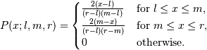
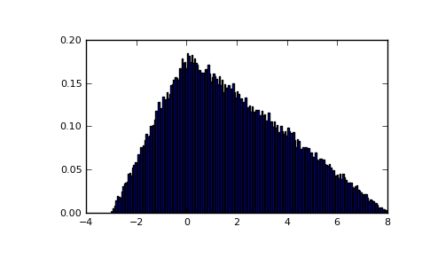

numpy.random.RandomState.triangular¶
- RandomState.triangular(left, mode, right, size=None)¶
Draw samples from the triangular distribution.
The triangular distribution is a continuous probability distribution with lower limit left, peak at mode, and upper limit right. Unlike the other distributions, these parameters directly define the shape of the pdf.
Parameters : left : scalar
Lower limit.
mode : scalar
The value where the peak of the distribution occurs. The value should fulfill the condition left <= mode <= right.
right : scalar
Upper limit, should be larger than left.
size : int or tuple of ints, optional
Output shape. Default is None, in which case a single value is returned.
Returns : samples : ndarray or scalar
The returned samples all lie in the interval [left, right].
Notes
The probability density function for the Triangular distribution is

The triangular distribution is often used in ill-defined problems where the underlying distribution is not known, but some knowledge of the limits and mode exists. Often it is used in simulations.
References
[R175] Wikipedia, “Triangular distribution” http://en.wikipedia.org/wiki/Triangular_distribution Examples
Draw values from the distribution and plot the histogram:
>>> import matplotlib.pyplot as plt >>> h = plt.hist(np.random.triangular(-3, 0, 8, 100000), bins=200, ... normed=True) >>> plt.show()
(Source code, png, pdf)

{kind=link}